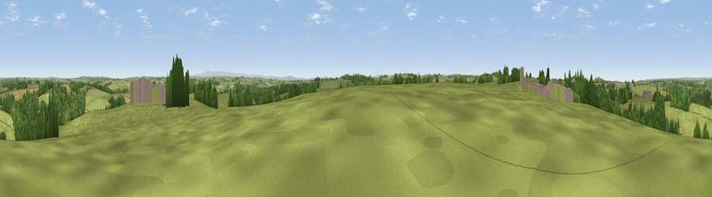

Viewpoint near North Tamerton
#27373 in England · top 55% of its area beats it · near North TamertonThe view, rendered

A 360° render of this exact spot computed from the terrain model, tree cover and land cover — summer colours, afternoon light, calibrated against photographs of famous viewpoints. Real trees, hedges and buildings will differ in detail.
The panorama
Grey silhouette: terrain skyline in each direction (720 bearings, Earth curvature and refraction included). Dashed green: skyline with trees (+15 m) and buildings (+8 m) as obstacles. Blue strip: how far the ground is visible on each bearing.
Where the view opens
Wedge length = distance to the farthest visible ground on that bearing (vegetation-aware). Rings at 10, 25 and 50 km.
What fills the view
77% grassland · 16% woodland · 5% cropland · 2% built-up
Angular shares of the visible panorama (visual magnitude), not map area. Landscape diversity 0.31 (0–1 Shannon).
Key numbers
More beautiful places nearby
The staircase of upgrades: each row has a higher view potential than everything closer. Driving times are estimates from straight-line distance, calibrated against real road routing — check an actual route before setting out.
| Place | Direction | Drive | Score |
|---|---|---|---|
| Viewpoint near North Tamerton | SSW · 3 km | ~6 min | 51.3 |
| Viewpoint near Whitstone | W · 4 km | ~9 min | 58.5 |
| Viewpoint near Whitstone | WNW · 5 km | ~10 min | 69.4 |
| Viewpoint near Poundstock | WNW · 12 km | ~22 min | 70.0 |
| Viewpoint near Poundstock | WNW · 12 km | ~22 min | 76.0 |
| Viewpoint near Poundstock | W · 13 km | ~23 min | 79.7 |
| Viewpoint near Crackington Haven | W · 14 km | ~25 min | 81.8 |
| Viewpoint near Crackington Haven | WSW · 18 km | ~30 min | 88.1 |
50.74933, -4.40586 · source: screening · position refined by local search. Computed location — check access rights before visiting.